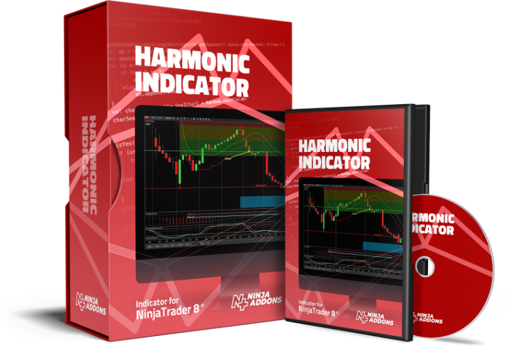

BUY NOW >
01
Harmonic Indicator
Applied manually Harmonic trading techniques can not be used on any time frame. The reason is that this technique is enormously time-consuming in terms of analysis. It is best to use on daily, weekly and monthly charts.
Learn More →

02
Chartist Indicator
Applied manually Harmonic trading techniques can not be used on any time frame. The reason is that this technique is enormously time-consuming in terms of analysis. It is best to use on daily, weekly and monthly charts.
Learn More →

03
Elliott Indicator
Applied manually Harmonic trading techniques can not be used on any time frame. The reason is that this technique is enormously time-consuming in terms of analysis. It is best to use on daily, weekly and monthly charts.
Learn More →

04
Radartape Indicator
Applied manually Harmonic trading techniques can not be used on any time frame. The reason is that this technique is enormously time-consuming in terms of analysis. It is best to use on daily, weekly and monthly charts.
Learn More →